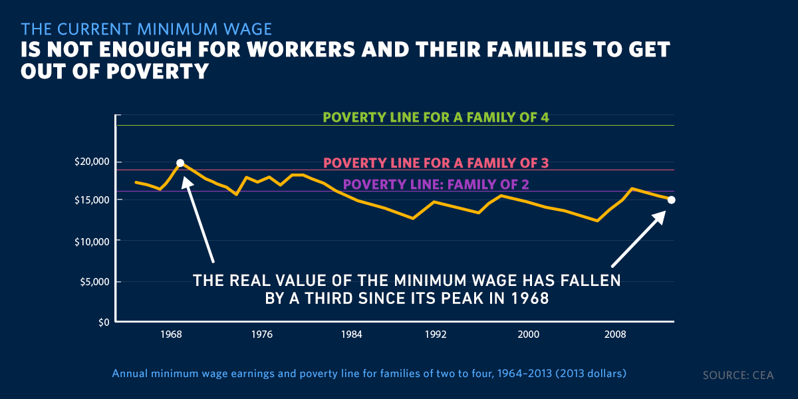
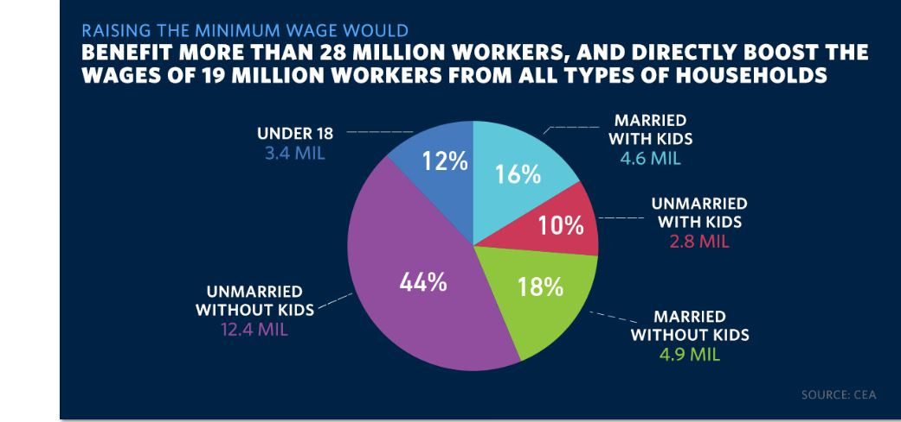
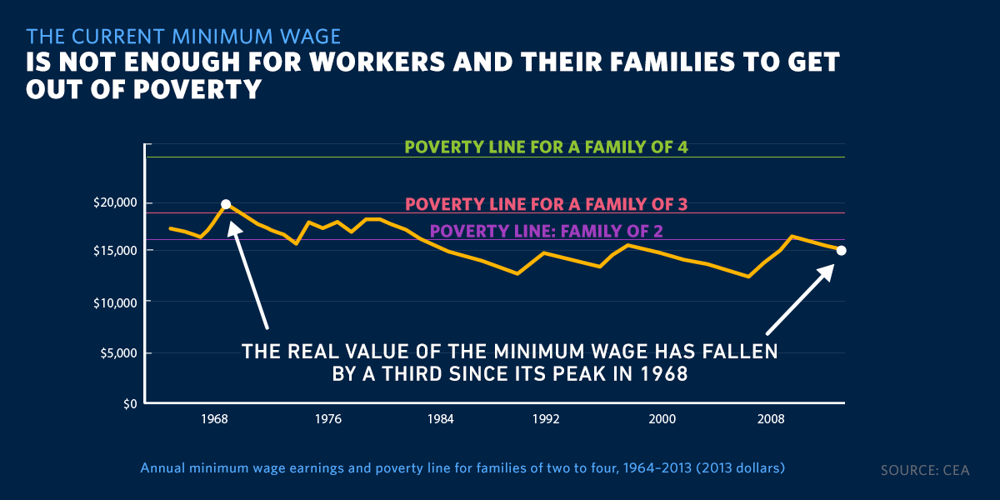
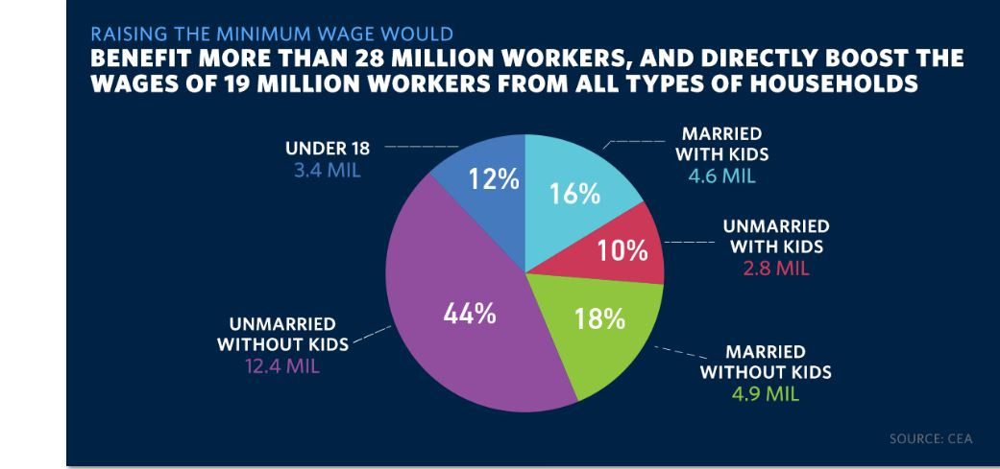
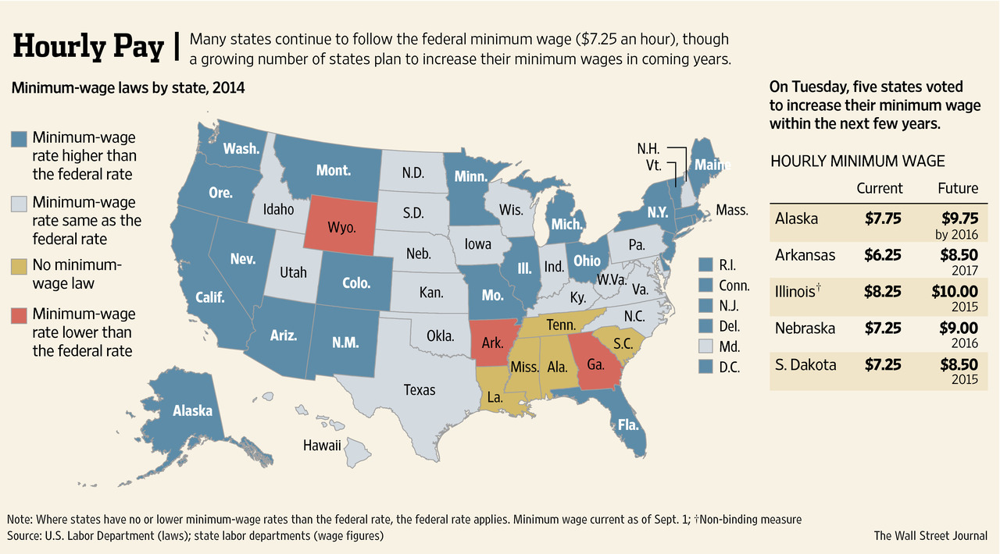
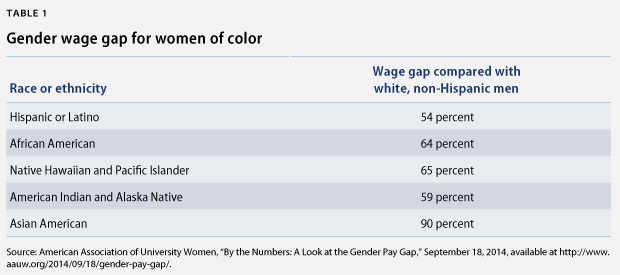

Minimum Wage
Understand what living on minimum wage truly looks like.
“Of course, nothing helps families make ends meet like higher wages…and to everyone in this Congress who still refuses to raise the minimum wage, I say this: If you truly believe you could work full-time and support a family on less than $15,000 a year,
go try it. If not, vote to give millions of the hardest-working people in America a raise.” –President Obama, State of the Union address, Jan. 20, 2015.
 

History
Introduced in 1938 during The Great Depression, minimum wage was initially set at $0.25 per hour. Since being changed 22 times, the federal minimum wage is set at $7.25 since 2009.
There are two sides to every story...
| Raising the minimum wage would aid the economy and spur job growth.
Simply put; if the minimum wage is raised, people make more money and spend more money. If more items and services are being bought, then more jobs would be needed to make them. |
Increasing the minimum wage would raise unemployment levels. If the minimum wage is raised, then businesses could need to lay off employees because of the higher pay they
would be giving. |
| Increasing the minimum wage would help reduce poverty. |
Increasing the minimum wage would increase poverty levels because businesses would reduce the hours of their employees to compensate, leaving them with the same or less in their paycheck.
The higher wages are, the higher costs of production are which leads to higher prices on goods. If goods are priced higher, less consumers will buy them. |
| A higher minimum wage would reduce government welfare spending. If low-income workers earned more money, they would not depend on government benefits as much as if the minimum wage remained the same. |
Although the reliance of low income workers on goverment programs would decrease if the minimum wage was raised, small businesses would have to lay off tons of workers or close. |
| Increasing the minimum wage would reduce income inequality. |
Raising the minimum wage would hurt low-skilled workers. From an employer's perspective, people with the lowest skill levels cannot justify higher wages. |
| A minimum wage increase would help to reduce race and gender inequality. |
If increasing the minimum wage will decrease the workforce because of small businesses closing, it will the likelihood of upward mobility for low income workers. |
| Raising the minimum wage would lead to a healthier population and prevent crime. Workers earning a higher minimum wage would have enough to eat, less likely to smoke, suffer from fewer emotional and psychological problems and not have the need to commit petty crimes to survive. |
If the minimum wage is increased, companies could use technology to replace service employees. If companies cannot afford to pay a higher minimum wage for low-skilled
employees, they will use robots to avoid hiring people. |
| The current minimum wage is not high enough to allow people to afford everyday essentials or important large purchases, such as housing. Low income workers would be left in serious debt by just a renting an apartment. |
Raising the minimum wage would increase housing costs. In cities with a limited housing supply, raising the minimum wage but not increasing housing stock would lead to an increase in rental prices as
because workers will have more money to compete for the same amount of housing. |
| Increasing the minimum wage result in a ripple effect, raising the incomes of people who make above the minimum wage. |
Raising the minimum wage would encourage companies to outsource jobs to countries where costs would be lower. |
Find out more facts and figures from our main source on pros and cons here

Quick Facts
- There have been only three times that congress passed legislation to increase minimum wage in 30 years.
- The federal minimum wage per hour for tipped workers is $2.13.
- The yearly income of full-time worker on federal minimum wage is $15,080.

Women of Color and the Wage Gap
Currently, women of all races make an average 78% of what men make, but the percentages targeting specific races provide even scarier numbers.

Women of color tend to be qualified for jobs in service, sales or office jobs because many aren't able to get higher graduate degrees. A further issue for all
women is that they have no federally mandated paid family and medical leave and paid sick days, which hurts women who also have the large responsibility of caring for a family.
Closing the wage gap is a HUGE part of the minimum wage issue, as many women of color are working in low income jobs tha would be affected by changing the minimum wage.